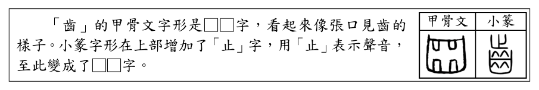
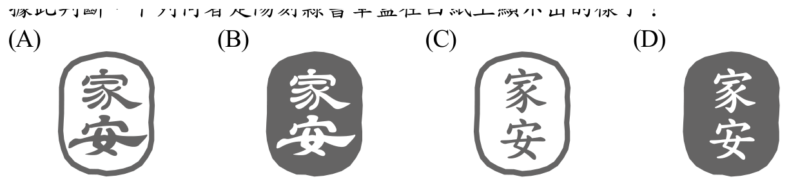
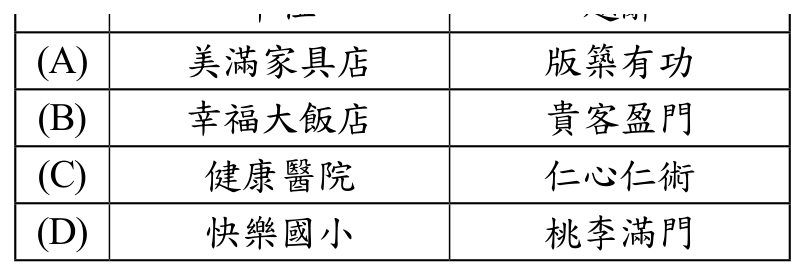
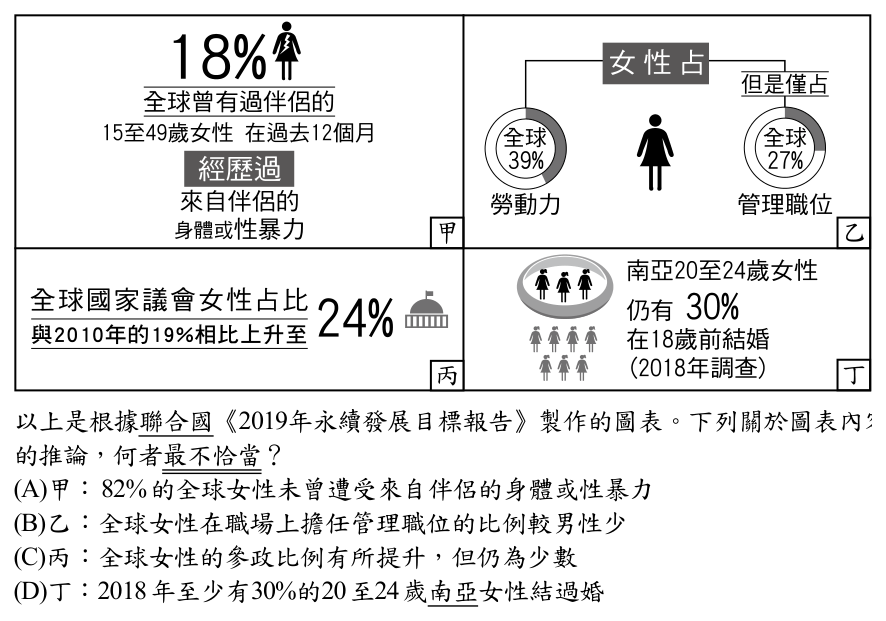
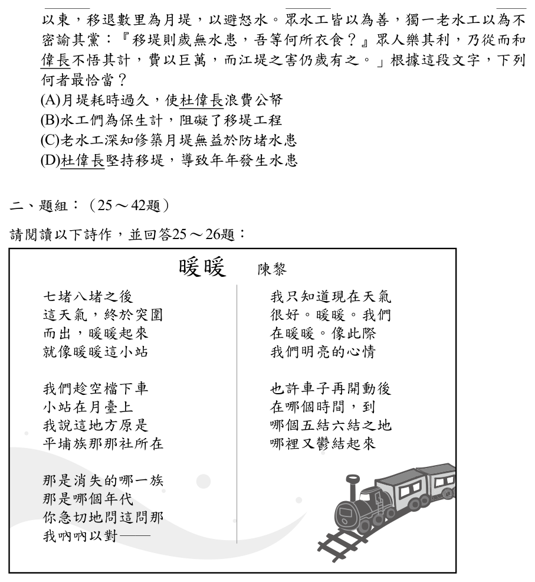
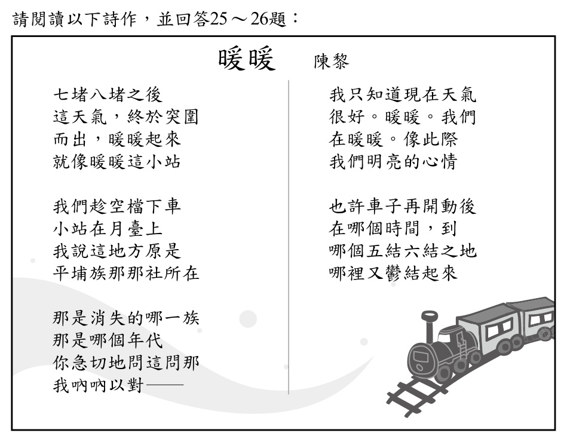
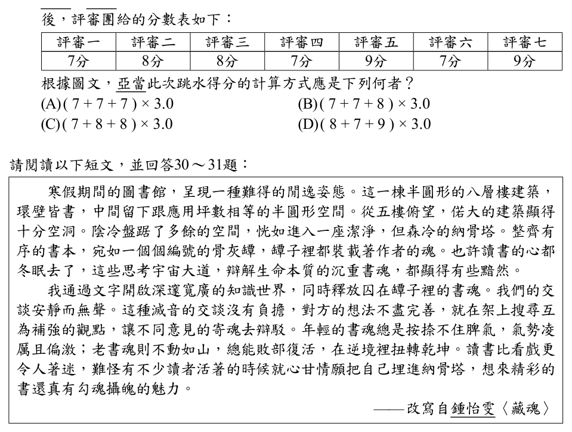
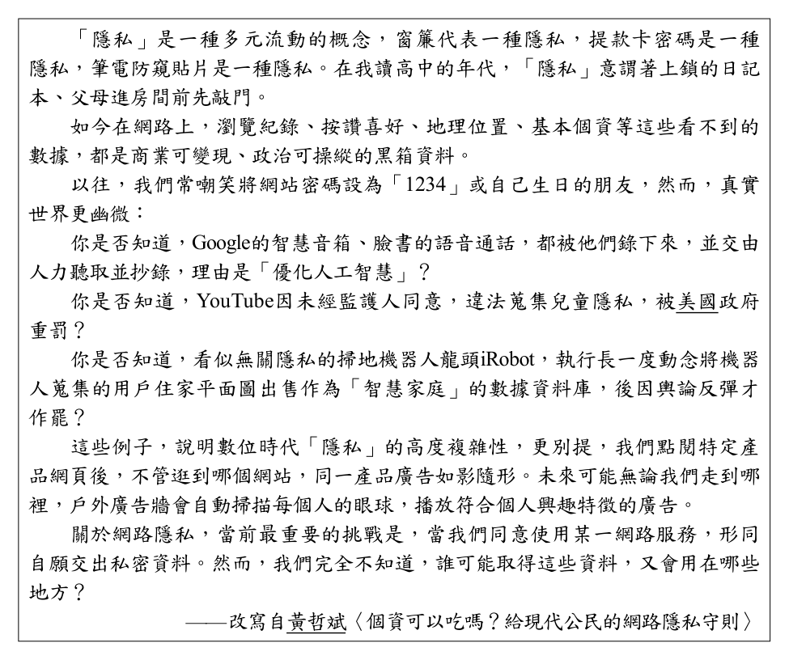
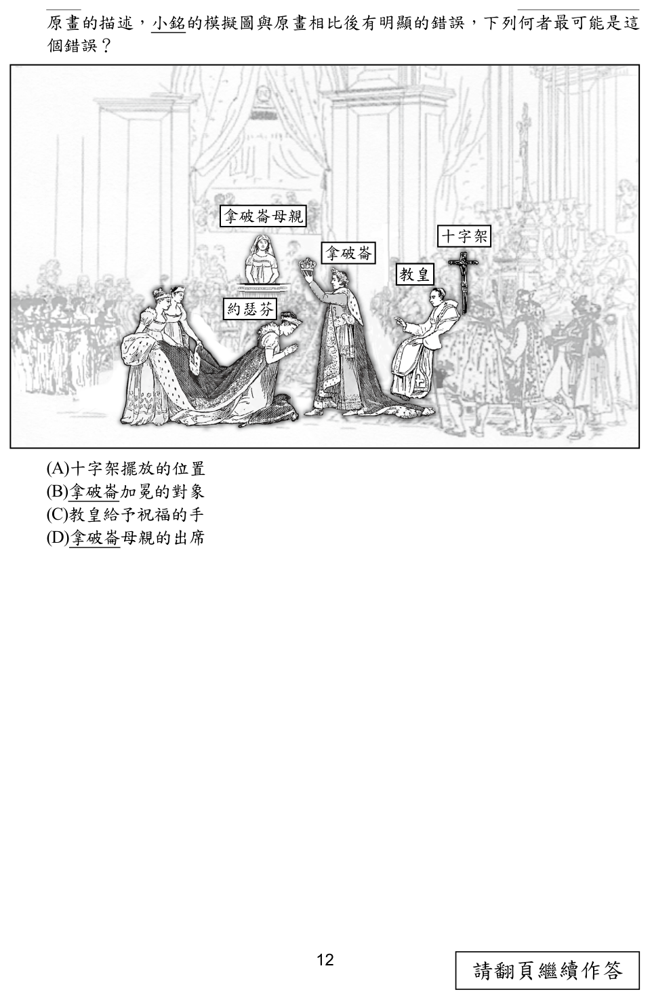

112 年國中教育會考國文試題與答案
這一頁是民國 112 年國中教育會考國文的整份歷屆試題，共 42 題，題目與標準答案出自心測中心 會考歷屆試題（依著作權法 §9，考試試題不受著作權保護），其中 42 題附有詳解。以下逐題列出題幹、選項與答案；要計時作答或記錄成績，請用線上練習。
線上作答這一科 →
全部 42 題
第 1 題
以下是一則論文摘要：「本文旨在說明臺灣國民小學至大學學生閱讀興趣與閱讀素養的關係，以及不同學齡階段的讀寫素養表現。不論年級，閱讀興趣與閱讀素養有正向關聯，然由一般學生投資於閱讀的時間反映出閱讀興趣有加強之必要。」若要以這段文字的核心概念標示一組關鍵詞，下列何者最恰當？
- （A）臺灣、學齡階段
- （B）國民小學、大學
- （C）正向關聯、閱讀時間
- （D）閱讀興趣、閱讀素養
答案：（D）
詳解與考點
正解：摘要反覆說明「閱讀興趣」與「閱讀素養」的關係，且以兩者的正向關聯為研究核心，故 D 最能標示全文關鍵詞。
A：「臺灣、學齡階段」只指出研究地點與範圍，未呈現核心議題。
B：「國民小學、大學」只是受試者的學段。
C：「正向關聯」是研究結論，「閱讀時間」是輔助觀察，未如 D 直接指出兩個主要概念。
本題考點：關鍵詞擷取——選能涵蓋研究對象、主要變項與核心關係的詞；研究地點、學段與單一結論通常不如核心概念具代表性。
第 2 題
下列文句何者有語病？
- （A）他不但才華出眾，而且和藹可親
- （B）幸虧你事先做好準備，否則災情慘重
- （C）原來他有難言之隱，難怪總是愁眉不展
- （D）與其讓你在事後落淚，難道讓你犯錯懊悔
答案：（D）
詳解與考點
正解：關聯詞的固定搭配。「與其」應搭配「不如」，D 卻寫成「與其……難道……」，造成句式不完整；可改為「與其讓你犯錯後懊悔，不如事先提醒你避免犯錯」，故 D 有語病。
A：「不但……而且……」用來連接才華與性情兩項優點，搭配正確。
B：「幸虧……否則……」表達已有準備，否則災情會更嚴重，搭配正確。
C：「原來……難怪……」說明知道原因後便能理解愁眉不展，搭配正確。
本題考點：語病辨析——檢查關聯詞是否成對且語意相接；「不但……而且……」、「幸虧……否則……」、「與其……不如……」皆有固定搭配。
第 3 題
「彎曲的生命旅路，常常會被安排與許多人與事錯身而過甲甲有些注定是淡漠的乙乙並淪為遺忘丙丙有些則產生強烈衝擊丁丁終至刻骨銘心。」這段文字中的甲、乙、丙、丁四處，何者最適合使用標點符號中的分號？
- （A）甲
- （B）乙
- （C）丙
- （D）丁
答案：（C）
詳解與考點
正解：分號用於兩個結構相近、意思並列的分句之間。丙處前為「有些注定是淡漠的，並淪為遺忘」，後為「有些則產生強烈衝擊，終至刻骨銘心」，兩組形成並列對照，最適合使用分號，故 C 為正解。
A：甲處是前一敘述「常常會被安排與許多人與事錯身而過」結束、後一句開始分述不同情形之處，較宜用句號，不宜用分號。
B：乙處仍在同一分句內，前後是承接關係，不宜用分號。
D：丁處位在整句結束處，應用句號，不宜用分號。
本題考點：分號用法——用於結構相近、語意並列或對照的分句之間；標點判斷——若是句末用句號，若仍屬同一分句的承接內容則不用分號。
第 4 題
下列文句，何者語詞使用最恰當？
- （A）你到底看見了什麼？豈非這樣驚訝
- （B）並非我與他相識，這件事絕不可能善罷甘休
- （C）你所說的無非是老生常談，他哪裡聽得進去
- （D）若非我故意和你唱反調，實在是你的做法不合理
答案：（C）
詳解與考點
正解：題幹考語詞使用，關鍵是檢查詞義與前後句的邏輯；「無非」表示「不過就是、只是」，C「你所說的無非是老生常談」用法正確且句意通順。
A：「豈非」用於反問，後面應接可供反問的敘述；「豈非這樣驚訝」語意不完整。
B：「並非」用來否定前項，後句卻接「絕不可能善罷甘休」，前後邏輯無法連貫。
D：「若非」表示「如果不是」，後面應接相應的假設結果；本句前後因果錯位，語意不通。
本題考點：語詞使用——須同時檢查詞義、句式與上下句邏輯；「無非」判準——表示「不過就是、只是」，後面可接所限定的內容。
第 5 題
下列選項「」中的字，何組讀音相同？
- （A）「迄」今未成／「屹」立不搖
- （B）金鑲玉「嵌」／命運「坎」坷
- （C）寂「寥」冷清／「謬」誤百出
- （D）千叮萬「囑」／引人「矚」目
答案：（D）
詳解與考點
正解：比較兩字的教育部標準讀音。D 的「囑」與「矚」都讀 ㄓㄨˇ，讀音相同，故選 D。
A：「迄」讀 ㄑㄧˋ；「屹」讀 ㄧˋ，讀音不同。
B：「嵌」讀 ㄑㄧㄢˋ；「坎」讀 ㄎㄢˇ，讀音不同。
C：「寥」讀 ㄌㄧㄠˊ；「謬」讀 ㄇㄧㄡˋ，讀音不同。它看起來對，是因為兩字字形有相近部分，但聲母與韻母都不同。
本題考點：字音辨析——比較讀音時須逐一核對聲母、韻母與聲調；字形相近或部件相同，不能直接推定讀音相同。
第 6 題
「齒」的甲骨文字形是□□字，看起來像張口見齒的樣子。小篆字形在上部增加了「止」字，用「止」表示聲音，至此變成了□□字。這段文字的空格處，依序應填入何種造字原則？

- （A）象形／會意
- （B）指事／形聲
- （C）象形／形聲
- （D）指事／會意
答案：（C）
詳解與考點
正解：題幹指出甲骨文「齒」像張口見齒，是描摹事物外形，屬象形；小篆在上部加「止」且用「止」表示聲音，形成形旁與聲旁的結構，屬形聲，C 為正解。
A：小篆增加的「止」是表音，不是兩個意符合成新義，所以不是會意。
B：甲骨文直接描摹牙齒外形，不是在象形字上加抽象符號，故不是指事。
D：甲骨文不是指事，小篆的「止」也不是表義的會意結構。
本題考點：六書造字原則——象形字描摹事物外形；形聲字由形旁表義、聲旁表音構成；判別「齒」時，像牙齒的甲骨文字形為象形，小篆的「止」表音而為形聲。
第 7 題
「上個世代對於永續住宅的普遍想像，總是不出屋頂上鋪滿太陽能板、隨意利用各種回收廢棄物蓋成的缺乏整體感的建築物。許多這類大剌剌表現出『友善地球』的建築物，也因此極易成為建築純粹主義者嘲弄的對象。他們語帶不屑地認為，這簡直是以粗鄙的解決手法打敗了高尚審美觀。」根據這段文字，下列哪一種住宅的特點最符合「建築純粹主義者」的主張？
- （A）符合審美要求
- （B）講求永續發展
- （C）呈現建材原貌
- （D）滿足居住需求
答案：（A）
詳解與考點
正解：建築純粹主義者認為環保住宅以「粗鄙的解決手法打敗了高尚審美觀」，可知他們重視的是建築的整體美感與審美要求。A 最符合其主張，故選 A。
B：永續發展正是文中遭其嘲弄的住宅訴求，不是其優先主張。
C：呈現建材原貌未見於文段，不能據此推論。
D：滿足居住需求也未被文段列為其批評或主張的重點。
本題考點：文意推論——人物的主張可由其稱許或批評的理由判讀；選項若只是一般住宅功能、卻非文中焦點，不宜當作作者或人物的特定立場。
第 8 題
「陰刻」是在平面上刻出凹陷的立體線條，凹陷下去的字是「陰文」。「陽刻」則是在平面上保留凸出的立體線條，將其餘部分刻除，凸出來的字是「陽文」。據此判斷，下列何者是陽刻隸書章蓋在白紙上顯示出的樣子？

本題選項為上圖中的 A／B／C／D，請對照圖片作答。
答案：（A）
詳解與考點
正解：題幹說陽刻保留凸出的陽文；印章蓋到白紙時，凸出的字會沾墨，故應呈現白底、深色的隸書字，A 為正解。
B：底色深、字反白表示被刻除的部分沾墨，屬陰刻效果。
C：此圖的字體不是隸書；本題除了判斷陽刻效果，也須符合隸書字形。
D：底色深、字反白，同樣是陰刻效果。
本題考點：印章正負形判讀——陽刻保留凸字，蓋印後呈白底深字；陰刻刻除字形，蓋印後呈深底反白字；字體辨識——須同時核對刻法與隸書特徵。
第 9 題
小平欲致贈匾額祝賀下列四個單位，匾額上所使用的題辭何者不恰當？

- （A）美滿家具店：版築有功
- （B）幸福大飯店：貴客盈門
- （C）健康醫院：仁心仁術
- （D）快樂國小：桃李滿門
答案：（A）
詳解與考點
正解：本題考題辭（賀辭）須對應致贈的場合。「版築有功」用於祝賀建築落成、房舍新成，贈給開業的「美滿家具店」並不恰當，宜改用「駿業肇興」「大展鴻圖」等商業賀辭，故此配對不恰當，選A。
B：「貴客盈門」祝賀賓客盈門、生意興隆，用於「幸福大飯店」恰當。
C：「仁心仁術」讚醫者仁德與醫術兼備，用於「健康醫院」恰當。
D：「桃李滿門」喻作育英才、學生眾多，用於「快樂國小」恰當。
本題考點：應用題辭的場合對應——賀辭各有專用對象（落成、商業、醫界、學界）；陷阱在把「版築有功」這類落成賀辭誤用於商店開業。
第 10 題
「夏七月，赤日停天，亦無風，亦無雲。前後庭赫然如洪爐，無一鳥敢來飛。汗出遍身，縱橫成渠。置飯於前，不可得吃。呼簟欲臥地上，則地濕如膏，蒼蠅又來緣頸附鼻，驅之不去。正莫可如何，忽然疾澍澎湃之聲，如數百萬金鼓。簷溜浩於瀑布。身汗頓收，地燥如掃，蒼蠅盡去，飯便得吃。不亦快哉！」根據這段文字，作者心情轉變的關鍵最可能是下列何者？
- （A）發現美麗的景致
- （B）遠離擾人的蟲蠅
- （C）聽見悅耳的鼓聲
- （D）驟降消暑的大雨
答案：（D）
詳解與考點
正解：題幹以「忽然」標出轉折，疾澍來後出現「身汗頓收、地燥如掃、蒼蠅盡去、飯便得吃」，可知作者從酷熱難耐轉為暢快的關鍵是驟降消暑的大雨，故 D 正確。
A：文中沒有描寫美麗景致，且心情改變由大雨引發。
B：蟲蠅離去是下雨帶來的結果，不是最初的關鍵原因。
C：「如數百萬金鼓」是形容急雨聲勢浩大，並非真的聽見鼓聲。它看起來對，是因為句中出現「金鼓」，但這是比喻。
本題考點：閱讀理解——找出情緒轉折前後的事件與結果；比喻須還原本體，「如數百萬金鼓」寫的是雨聲。
第 11 題
下列文句，何者用字完全正確？
- （A）大考將近，更要懂得善用索碎的時間
- （B）來到默生的環境不免會令人感到緊張
- （C）我忘了帶錢，拜託你先幫我代墊報名費
- （D）這項工程是讓我國邁向現代化的里程盃
答案：（C）
詳解與考點
正解：題幹要求用字完全正確。C 的「代墊」指代人先行墊付費用，符合「先幫我代墊報名費」的語境，故 C 正確。
A：「索碎」應為「瑣碎」，「瑣碎時間」指零散細小的時間。
B：「默生」應為「陌生」，「陌生環境」指不熟悉的環境。
D：「里程盃」應為「里程碑」，比喻發展過程中具有指標意義的事件。
本題考點：字形辨析——逐字檢查字義是否符合固定詞語；常見同音或近形誤寫為「瑣碎」非「索碎」、「陌生」非「默生」、「里程碑」非「里程盃」。
第 12 題
「少室周為趙簡子之右1，聞牛談有力，請與之競，弗勝，致2右焉。簡子許之，使少室周為宰，曰：『知賢而讓，可以為訓矣。』」根據文意脈絡，下列何者最適合用來說明「訓」字的意義？
- （A）典範
- （B）順從
- （C）教誨
- （D）解釋
答案：（A）
詳解與考點
正解：題幹的「知賢而讓，可以為訓矣」是在稱許少室周知道牛談賢能便讓出右者職位；此行為可供後人效法，所以「訓」最適合解為典範，故 A 為正解。
B：「順從」與「讓賢的行為可供效法」的語境不合。
C：「教誨」著重主動教導他人；文中著重的是少室周的行為具有示範意義，不是他在教導別人。它看起來對，是因為「訓」常有訓誡、教導之義，仍須依「可以為」判斷。
D：「解釋」不能承接「可以為訓」的推崇語氣。
本題考點：文言字義推敲——字義須放入語句功能判斷；「可以為訓」表示可作後人效法的典範，不宜只套用常見的「教誨」義。
第 13 題
「茲鄭引輦1 上高梁2 而不能支。茲鄭倚轅而歌，前者止，後者趨，輦乃上。使茲鄭無術以致人，則身雖絕力至死，輦猶不上也。今身不至勞苦而輦以上者，有術以致人之故也。」這段文字的主旨最可能是下列何者？
- （A）團結就是力量
- （B）做事要講究方法
- （C）堅持到底才能成功
- （D）沒有付出就沒有收穫
答案：（B）
詳解與考點
正解：文末「有術以致人之故」，茲鄭一人用盡力氣仍拉不上車，改以倚轅而歌使前者停、後者趨，便能讓車上坡，強調做事須善用方法，故 B 正確。
A：文中確有眾人相助，但重點是茲鄭運用方法使人相助，不只是人多力量大。它看起來對，是因為結果由多人推車完成，卻忽略「術」才是主旨。
C：文章沒有強調堅持到底，而是對比蠻力與方法。
D：茲鄭不必親自勞苦而能使車上坡，與「沒有付出就沒有收穫」不合。
本題考點：文言文主旨歸納——以篇末總結句判定中心思想；「術」指方法，遇到一己之力不足時要設法借助條件與他人之力。
第 14 題
下列文句「」中的詞語，何者使用最恰當？
- （A）寵物一生病就丟棄的人，真是「若即若離」
- （B）他缺乏耐性，總是「急公好義」，莽莽撞撞
- （C）經過這次教訓後，他「幡然悔悟」，痛改前非
- （D）期末將近，大家都「庸庸碌碌」，忙得不可開交
答案：（C）
詳解與考點
正解：成語與後文語意是否一致。「幡然悔悟」指突然醒悟而徹底改過，與「痛改前非」相互呼應，故 C 使用最恰當。
A：「若即若離」指態度若親近若疏遠，不能形容一生病就丟棄寵物的人。
B：「急公好義」指熱心公益、樂於助人，非缺乏耐性或莽莽撞撞。
D：「庸庸碌碌」指平庸無為，與「忙得不可開交」的繁忙狀態不合。
本題考點：成語辨析——先掌握成語的固定義，再檢查能否與前後語境連貫；褒貶色彩與適用對象也須一致。
第 15 題
甲：花寒懶發鳥慵啼，信馬閑行到日西。何處未春先有思？柳條無力魏王堤。 ―― 白居易〈魏王堤〉乙：陰陰溪曲綠交加，小雨翻萍上淺沙。鵝鴨不知春去盡，爭隨流水趁桃花。 ―― 晁沖之〈春日〉關於這兩首詩的分析，下列敘述何者最恰當？
- （A）甲詩描寫清晨春寒料峭的景象
- （B）乙詩描寫春末溪邊所見的景致
- （C）兩詩首二句皆對仗，表達情思
- （D）兩詩皆屬七絕，只有偶句用韻
答案：（B）
詳解與考點
正解：題幹要從詩中意象判斷季節與景致。乙詩「鵝鴨不知春去盡，爭隨流水趁桃花」寫桃花隨流水而去，點出春將盡的溪邊景象，故 B 為正解。
A：甲詩寫「信馬閑行到日西」，是行至日暮，不是清晨，故錯誤。
C：甲、乙首二句並非皆對仗，且乙詩首二句主要寫景，不能概括為皆表達情思，故錯誤。
D：兩詩每句皆為 7 字、各有 4 句，皆屬七言絕句；但兩詩首句「啼」、「加」也分別與偶句押韻，並非只有偶句用韻，故錯誤。
本題考點：詩歌意象——落花隨流水可呈現暮春；詩歌格律——七言絕句每首 4 句、每句 7 字，常見首句入韻，不能概括為只有偶句用韻。
第 16 題
「蓋天下有反覆之小人，亦有反覆之君子。人但知不反覆不足以為小人，庸知不反覆亦不足以為君子。蓋小人之反覆也，因風氣勢利之所歸，以為變動；君子之反覆也，因學識之層累疊進，以為變動。其反覆同，其所以為反覆者不同。」根據這段文字，作者認為「不反覆亦不足以為君子」的原因，最可能是下列何者？
- （A）小人若洗心革面，一反前非即可成為君子
- （B）為應對小人反覆，不得不改變既有的策略
- （C）順應民心的向背，選擇最適合現況的做法
- （D）隨著所知的增長，會修正自己原本的觀點
答案：（D）
詳解與考點
正解：題幹以「君子之反覆也，因學識之層累疊進，以為變動」說明君子改變觀點的原因。學識隨累積而增長，便會修正原有觀點，D 最符合，故 D 為正解。
A：小人洗心革面而成君子，文中沒有提出這種情況。
B：為應對小人而改變策略，文中未將君子的變動歸因於對付小人。
C：順應民心的向背是因風氣勢利而變動，較接近文中對小人的描述，不是君子反覆的原因。它看起來對，是因為同樣含有「改變」之意，但文中的判準是學識進展。
本題考點：文言文論點理解——先找作者直接說明因果的句子；語意判準——「因學識之層累疊進」表示隨所知增加而修正觀點。
第 17 題
以上是根據聯合國《2019年永續發展目標報告》製作的圖表。下列關於圖表內容的推論，何者最不恰當？

- （A）甲： 82% 的全球女性未曾遭受來自伴侶的身體或性暴力
- （B）乙：全球女性在職場上擔任管理職位的比例較男性少
- （C）丙：全球女性的參政比例有所提升，但仍為少數
- （D）丁：2018 年至少有30%的20 至24 歲南亞女性結過婚
答案：（A）
詳解與考點
正解：題幹問最不恰當的推論，關鍵在圖表百分比所統計的暴力類型與對象。甲把 18％ 的統計直接換算成 82％「未曾遭受來自伴侶的身體或性暴力」，將原圖表的統計範圍擴大或改換為伴侶條件，推論不恰當，故 A 正確。
B：圖表以男女管理職位比例比較，可推知女性比例較男性少。
C：圖表呈現女性參政比例提升，但比例仍未過半，可推知仍為少數。
D：圖表呈現 2018 年南亞 20 至24 歲女性至少 30％已結婚，可作此數值判讀。
本題考點：圖表推論——先核對統計對象、時間、年齡與指標定義，再作百分比判讀；不能把一類暴力的數據任意改寫為特定加害關係。
第 18 題
「商代人只在上、下午各吃一餐，因為農業社會耕作頗費體力，早上需好好補充精力，下午因太陽將西下，無法再工作，不如早睡早起，故不必吃得多。春秋晚期以來，隨著牛耕鐵器的廣泛使用，尤其是戰國時代鐵器的普及，生產力大大提高。社會的面貌起了很大的變化，人們的生活內容漸漸豐富起來，許多人開始在夜間從事非生產性的工作，富人娛樂活動增加，便多一餐以補充體力。」根據這段文字，古人從兩餐變成三餐的原因，與下列何者最不相關？
- （A）社會形態改變
- （B）夜間活動增加
- （C）耕作時間延長
- （D）鐵器廣泛使用
答案：（C）
詳解與考點
正解：題幹問最不相關，文中因鐵器普及使生產力提高，生活內容豐富、夜間非生產活動增加，因而多吃一餐補充體力；沒有說耕作時間延長，故 C 最不相關。
A：生產力提高使生活內容改變，屬三餐制出現的背景。
B：夜間活動增加是文中明示多一餐的原因。
D：鐵器廣泛使用帶動生產力提高，是前述變化的起點。
本題考點：文章推論——把文中的因果鏈依序連接；鐵器普及→生產力提高→夜間活動增加→多一餐，未被文本支持的原因不可自行補入。
第 19 題
「傳統布農族社會在舉行重大的祭儀活動前，族人會聚集在一起用木杵搗米準備製作小米酒，發現不同的木杵會產生不同的聲響，因而將其作為合奏的樂器。後來每當族人聽到杵音傳來，就知道最近聚落即將舉辦慶典，杵音也因而具有傳遞訊息的功能。」根據這段文字，下列關於傳統布農族社會的推論，何者最恰當？
- （A）舉行重大慶典需要小米酒
- （B）透過傳遞木杵來交換訊息
- （C）依祭儀種類飲用不同的米酒
- （D）以整齊的杵音宣告祭儀開始
答案：（A）
詳解與考點
正解：題幹的關鍵是「舉行重大的祭儀活動前」族人會搗米「準備製作小米酒」。由祭儀前須製作小米酒，可推論舉行重大慶典需要小米酒，A 為最恰當的推論。
B：文中說木杵的「聲響」具有傳遞訊息的功能，不是透過傳遞木杵交換訊息。
C：文中沒有依祭儀種類飲用不同米酒的資訊，屬於無據增添。
D：杵音讓族人知道最近聚落即將舉辦慶典，未說以整齊杵音宣告祭儀開始；它看起來對，是把「傳遞訊息」延伸成特定的開始儀式。
本題考點：文章推論——只能依文中明示的事實推出合理結論；資訊範圍判斷——未提及的方式、分類或時點，不可自行補入。
第 20 題
蘇軾〈西江月〉：「世事一場大夢，人生幾度新涼？夜來風葉已鳴廊，看取眉頭鬢上。 酒賤常愁客少，月明多被雲妨。中秋誰與共孤光，把盞淒然北望。」下列關於詞句的說明，何者最不恰當？
- （A）「看取眉頭鬢上」表達自己年華老去
- （B）「酒賤常愁客少」意謂難以維持生計
- （C）「月明多被雲妨」比喻美好的事物不可能長久
- （D）「中秋誰與共孤光」流露想與親友團聚的心願
答案：（B）
詳解與考點
正解：「酒賤常愁客少」與「月明多被雲妨」連用，寫的是酒雖便宜卻少有賓客、明月常被雲遮，寄寓被疏遠與政治失意，不是沒有錢維持生活，故 B 最不恰當。
A：「眉頭鬢上」指愁緒已現於眉間、鬢髮，表達年華老去，說明恰當。
C：明月被雲遮妨礙，能比喻美好事物易受阻礙，說明有文本依據。
D：中秋本宜團圓，詞人卻「誰與共孤光」，流露盼與親友團聚而不得的孤寂。
本題考點：詞意詮釋——結合上下句的意象與情境理解寄託，不可只作字面直譯；「酒賤客少」寫人情疏離與失意。
第 21 題
1866 至1900 年甲國茶葉出口歐洲略表單位：萬擔年分出口總額年分出口總額說明： 1866 至1886 年間，甲國茶葉出口逐年大幅增長。歐洲國家茶葉生產技術發展起來後，甲國茶葉出口總額急轉直下。從1886 至1900 的十五年間，甲國茶葉出口銳減，在歐洲茶葉市場的占有率也從原本幾乎100%，急遽下降至 10% 左右。根據這份表格及說明，可以推論出下列何者？
- （A）甲國的茶葉生產技術在1886 年後越來越差
- （B）1900 年歐洲茶葉市場總交易量較1886 年少
- （C）1900 年甲國茶葉出口歐洲總額衰退至1886 年的 50%
- （D）1866 至1900 年間，甲國從茶葉出口國變成茶葉進口國
答案：（C）
詳解與考點
正解：選項要求把 1900 年與 1886 年的出口總額相比。表中 1886 年出口總額為 240 萬擔，1900 年為 120 萬擔，120÷240=0.5，恰好衰退到 1886 年的 50%，數值直接對得上，故 C 為正解。
A：表格只記錄出口總額，說明也只講「歐洲國家茶葉生產技術發展起來後」甲國出口下滑，這是被後起者趕上、市場遭瓜分，通篇沒有一句提到甲國自身的生產技術退步，錯誤。
B：說明寫甲國市場占有率從幾乎 100% 掉到 10% 左右，出口量卻只從 240 萬擔掉到 120 萬擔；占有率剩下十分之一而銷量仍有一半，反推歐洲茶葉市場的總交易量是擴大而非縮小，錯誤。
D：表中 1900 年甲國仍出口 120 萬擔到歐洲，只是量能減少，全文與表格都沒有任何甲國轉為進口的紀錄，「出口國變進口國」屬於無中生有，錯誤。
本題考點：表格與說明的交叉推論——先分清「絕對量（出口總額）」與「相對量（市場占有率）」是兩種資料；問衰退比例就直接取表中兩年數值相除，問市場規模則要把占有率與絕對量一起換算回推；凡表與說明都沒提到的事（技術好壞、貿易方向逆轉）一律不能推論。
第 22 題
「復北上，行石罅中，石峰片片夾起，路宛轉石間，塞者鑿之，陡者級之，斷者架木通之，懸者植梯接之。下瞰峭壑陰森，楓松相間，五色紛披，燦若圖繡。因念黃山當生平奇覽，而有奇若此，前未一探，茲遊快且愧矣！」根據這段文字，下列敘述何者最恰當？
- （A）作者對自己破壞自然環境感到慚愧
- （B）黃山片片石峰色彩繽紛，有如織錦
- （C）作者北上舊地重遊，乃因懷念黃山冬季美景
- （D）此遊窺得黃山奇景，作者心中因而喜愧交集
答案：（D）
詳解與考點
正解：文末「前未一探，茲遊快且愧矣」是判斷關鍵；「快」指此次得見黃山奇景的暢快喜悅，「愧」指先前未曾探訪的遺憾，因此作者喜愧交集，D 為正解。
A：文中「塞者鑿之，陡者級之，斷者架木通之，懸者植梯接之」是在描述道路工程，沒有說作者因破壞自然環境感到慚愧，錯誤。
B：「五色紛披，燦若圖繡」描寫的是下瞰峭壑中相間的楓松秋色，不是石峰本身色彩繽紛，錯誤。它看起來對，是因為前文緊接著寫「石峰片片夾起」，容易把後面的景色誤連到石峰。
C：「前未一探」表示先前沒有探訪，並非北上舊地重遊；文中也未說黃山冬季美景，錯誤。
本題考點：文言文理解——以句末抒情語句判讀作者心境；指涉判讀——景物描寫須回扣相鄰詞語，「楓松相間」才是「五色紛披」的描寫對象。
第 23 題
往歲士人多尚對偶為文，穆脩、張景輩始為平文，當時謂之古文。穆、張嘗同造朝，適見有奔馬踐死一犬，二人各記其事。穆脩曰：「馬逸1，有黃犬遇蹄而斃。」張景曰：「有犬死奔馬之下。」時文體新變，二人之語皆拙澀，當時已謂之工，傳之至今。根據這段文字，關於穆脩、張景針對奔馬踐死一犬的記事，下列敘述何者最恰當？
- （A）穆脩記事只著眼於犬
- （B）張景記事只著眼於馬
- （C）二人用語崇尚句式對偶
- （D）二人用語皆為時人稱頌
答案：（D）
詳解與考點
正解：文末「二人之語皆拙澀，當時已謂之工，傳之至今」，直接說明穆脩、張景的用語都曾受時人稱頌，故 D 最恰當。
A：穆脩寫「馬逸，有黃犬遇蹄而斃」，同時著眼於馬與犬。
B：張景寫「有犬死奔馬之下」，同時提到犬與馬。
C：二人改作的是「平文」，當時稱為古文，並非崇尚對偶句式。
本題考點：文言文閱讀——優先以文中明示評語作答；「皆」表示兩人都包括在內，「謂之工」即當時認為其文字寫得好。
第 24 題
「錢塘江石堤為洪濤所激，歲歲摧決。杜偉長為轉運使，人有獻說，自浙江稅場以東，移退數里為月堤，以避怒水。眾水工皆以為善，獨一老水工以為不然，密諭其黨：『移堤則歲無水患，吾等何所衣食？』眾人樂其利，乃從而和之。偉長不悟其計，費以巨萬，而江堤之害仍歲有之。」根據這段文字，下列敘述何者最恰當？

- （A）月堤耗時過久，使杜偉長浪費公帑
- （B）水工們為保生計，阻礙了移堤工程
- （C）老水工深知修築月堤無益於防堵水患
- （D）杜偉長堅持移堤，導致年年發生水患二、題組：（25 ～ 42題）請閱讀以下詩作，並
答案：（B）
詳解與考點
正解：老水工說「移堤則歲無水患，吾等何所衣食」，可知他明白月堤若成功，水工便少了修堤維生的機會，因此說服同伴反對，致使工程失敗，故 B 正確。
A：文中說月堤計畫受阻而未能解決水患，沒有說因耗時過久浪費公帑。
C：老水工不是認為月堤無益，反而認為移堤後將沒有水患。
D：杜偉長是「不悟其計」而受蒙蔽，不能說他堅持移堤導致年年水患。
本題考點：文言文情節因果——從人物私下言語判斷其動機；水工為保住既有生計而阻礙有效方案，造成公共工程失敗。
第 25 題
根據本詩，下列敘述何者最恰當？

- （A）第一節顯示車行至八堵之後天氣不佳
- （B）第二節說明作者此行目的地是暖暖
- （C）第三節可看出那那社名稱的由來
- （D）第四節點出作者珍惜當下的心境
答案：（D）
詳解與考點
正解：第四節寫「只知道現在天氣很好」及「明亮的心情」，不追究其他事物而專注眼前，點出作者珍惜當下的心境，故 D 最恰當。
A：第一節寫天氣「暖暖起來」，表示轉好，不是天氣不佳。
B：第二節只寫在小站下車，沒有說暖暖是此行目的地。
C：第三節提出那那社的族別與年代疑問，未交代名稱的由來。
本題考點：詩歌分節理解——先抓各節的景物、行動與情緒，再判斷敘述是否超出文本；「現在天氣很好」與「明亮的心情」共同表現安於當下。
第 26 題
關於本詩的寫作手法，下列敘述何者錯誤？
- （A）以天氣的變化象徵越來越沉重的心情
- （B）以重複出現的字詞形成詩歌的韻律
- （C）運用諧音及詞義的雙關增添詩意
- （D）預想尚未發生的情景收束全詩以下圖文改寫自亞當．斯金納《運動大百科》，請閱讀並
答案：（A）
詳解與考點
正解：題目問本詩寫作手法何者錯誤，應核對詩中的天氣與心情走向。詩中由「暖暖起來」到心情「明亮」，不是天氣變化象徵心情越來越沉重，因此 A 的說法錯誤，故 A 為正解。
B：詩中「暖暖」、「那那」等字詞重複出現，可形成韻律，正確。
C：「暖暖」兼指地名與溫暖，「五結六結」諧音鬱結，運用諧音及詞義雙關，正確。
D：末節預想車再開動的情景收束全詩，正確。
本題考點：現代詩寫作手法——象徵須依詩句的情感方向判讀，不可望字生義；語言效果——重複可形成韻律，諧音與詞義雙關可增添詩意，預想情景可收束詩篇。
第 27 題
根據圖文，下列關於跳水比賽的敘述，何者最恰當？

- （A）入水時水花的大小會影響分數高低
- （B）史上第一場跳水比賽是在室內舉行
- （C）奧運比賽的雙人賽必須配置7名評審
- （D）使用跳板起跳就可以獲得比較高的分數
答案：（A）
詳解與考點
正解：題幹須依圖文的評分說明判讀跳水分數的影響因素；入水時水花越小，分數越高，因此水花大小會影響分數高低，A 為正解。
B：圖文指出史上第一場跳水比賽是在室外、跳入河中舉行，不是在室內。
C：雙人賽的評審人數不是 7 名，與圖文規則不符。
D：跳板是比賽項目的區分，不是保證獲得較高分數的條件。
本題考點：圖文細節判讀——作答時須把選項逐項對回評分規則與比賽事實；跳水評分判準——入水水花越小，得分越高。
第 28 題
根據圖文，下列關於跳水比賽規則的敘述，何者最恰當？
- （A）毋須採計每一跳的得分，可擇優計算最後成績
- （B）選手完成一次跳水，每名評審最高只能給 10 分
- （C）若完成的動作比預定的難度更高，分數也會越高
- （D）選手每一跳須完成的難度係數，由現場抽籤決定
答案：（B）
詳解與考點
正解：題幹問跳水比賽規則，關鍵在於核對每名評審的單跳給分上限；選手完成一次跳水後，每名評審最高給 10 分，B 為正解。
A：比賽成績須採計每一跳，不能只挑較佳成績計算。
C：難度係數以賽前提交的預定動作為準；即使實際動作看似更難，也不會因此加分。它看起來對，是把「難度較高通常分數較高」誤當成可以臨場變更評分依據。
D：每一跳的難度係數不是由現場抽籤決定，而是賽前提交。
本題考點：規則細節比對——須分清楚評審給分上限、成績採計與難度係數的決定時點；跳水難度判準——以預定且事先提交的動作為準。
第 29 題
亞當是奧運跳水個人賽選手，他在比賽時某次的動作難度係數是 3.0，當他完成後，評審團給的分數表如下：評審一評審二評審三評審四評審五評審六評審七 7分 7分 9分 8分 7分 8分根據圖文，亞當此次跳水得分的計算方式應是下列何者？
- （A）( 7 + 7 + 7 ) ×
- （B）( 7 + 7 + 8 ) ×
- （C）( 7 + 8 + 8 ) ×
- （D）( 8 + 7 + 9 ) ×
答案：（C）
詳解與考點
正解：題幹的計分條件是 7 名評審、動作難度係數 3.0；依規則須先去除最高、最低各 2 個分數，再將中間 3 個分數相加。分數為 7、7、9、8、7、8、7，去除最高的 9、8 與最低的 7、7 後，保留 7、8、8，所以計算式為(7+8+8)×3.0，故 C 為正解。
A：保留 7、7、7，等於把應保留的 8 誤當成要剔除的分數，錯誤。
B：保留 7、7、8，少保留 1 個 8，未正確取中間 3 個分數，錯誤。
D：保留 8、7、9，仍把最高分 9 納入；它看起來對，是因為只注意到要刪除部分分數，卻沒有同時去除最高、最低各 2 個，錯誤。
本題考點：計分規則套用——先將評分由小到大排列，去除最高、最低各 2 個後取中間 3 個相加，再乘動作難度係數；去極值判準——不能只刪除各 1 個，也不能把最高分留在計算式中。
第 30 題
文中「活著的時候就心甘情願把自己埋進納骨塔」的涵義，與下列何者最接近？
- （A）獲得精神食糧，沉浸書堆
- （B）倡導終身學習，推廣閱讀
- （C）喪失生命熱情，心如死灰
- （D）甘心隱姓埋名，不慕榮利
答案：（A）
詳解與考點
正解：題幹的「活著的時候就心甘情願把自己埋進納骨塔」承接圖書館如納骨塔、書本如骨灰罈的比喻，觸發的是沉浸閱讀、與書魂交談的意象；A「獲得精神食糧，沉浸書堆」最接近。
B：本文雖寫讀書的魅力，重點卻不是倡導終身學習或推廣閱讀。
C：「心如死灰」指喪失生命熱情，與文中讀書比看戲更令人著迷的喜悅相反。它看起來對，是把「納骨塔」按字面聯想到死亡，忽略其比喻書本與閱讀的脈絡。
D：本文沒有甘心隱姓埋名、不慕榮利的意思。
本題考點：文學性文本理解——比喻須連結前後文的喻體與本體；意象判讀——納骨塔與骨灰罈在文中指圖書館與書本，凸顯閱讀者沉浸於知識世界。
第 31 題
關於本文的寫作手法，下列敘述何者最恰當？
- （A）藉由宏偉的建築，對比個人的渺小
- （B）以不同年齡層的閱讀習慣，凸顯世代差異
- （C）將靜態的閱讀比擬為交談，產生動態的效果
- （D）視線推移自室內延伸至室外，強調知識的寬廣請閲讀以下兩篇短文，並
答案：（C）
詳解與考點
正解：題幹問寫作手法，文中以「交談」寫閱讀，將原本靜態、無聲的讀書比擬為和書魂對話，形成動態效果，C 為正解。
A：文中描寫半圓形八層樓建築的空洞與森冷，沒有以宏偉建築對比個人渺小。
B：文章提到年輕與老書魂的性格，並未比較不同年齡層的閱讀習慣或凸顯世代差異。
D：視線停留於圖書館內部與書架，沒有由室內延伸至室外。
本題考點：寫作手法分析——辨認比喻時須找出本體與喻體；動靜轉換——以「交談」「辯駁」寫閱讀，使靜態閱讀呈現動態的對話感。
第 32 題
根據甲、乙兩文，下列敘述何者最恰當？
- （A）1880年代剛果曾提出瓜分非洲礦產的主張
- （B）月球大使館公司成立時，人類尚未踏上月球
- （C）沒人能挑戰霍普販賣月球地產是因《太空政策》期刊的論文
- （D）國家需實際登陸月球後，方可成為《外太空條約》的締約國
答案：（B）
詳解與考點
正解：題幹要求比對兩文的時間資訊；甲文說霍普於 1968 年創辦月球大使館公司，乙文說人類首次登月是 1969 年，因此公司成立時人類尚未踏上月球，B 為正解。
A：1880 年代是許多國家開始「瓜分非洲」，並在剛果爭相主張礦物資源所有權，不是剛果提出瓜分非洲礦產的主張。
C：甲文說從未有地球政府挑戰霍普的權限，是因當時沒人想到會有公司這樣做，不是因《太空政策》期刊的論文。
D：《外太空條約》開放各國簽署，沒有規定國家須實際登陸月球後才能成為締約國。
本題考點：雙文本比對——須將人物、事件與年代交叉核對；時序推論——1968 早於 1969，故可推出公司成立時人類尚未登月；條約資訊判讀——不得把文中未列的締約條件加進原意。
第 33 題
小貞讀過甲、乙兩文後，發現甲文中的霍普與乙文中的艾維斯對某項議題有歧見，這項議題最可能是下列何者？
- （A）太空探索是否應以和平進行為原則
- （B）國家是否可以獨占有利的登月地點
- （C）私人是否可以主張月球土地的所有權
- （D）非締約國是否可以破壞他國的探測器
答案：（C）
詳解與考點
正解：題幹要找霍普與艾維斯的歧見；霍普依其對《外太空條約》的理解，認為條約未規範私營公司而販賣月球土地，艾維斯則認為國家或私人企業都不能主張月球土地所有權，故 C 為正解。
A：乙文說太空探索必須和平進行並造福所有國家，兩文沒有顯示兩人對此有歧見。
B：乙文指出條約漏洞可能讓國家或私人企業先占先贏、獨占有利地點，並非兩人分別主張相反立場的核心。
D：文中提到締約國不可破壞他國探測器或基地，未討論非締約國是否可以破壞。
本題考點：雙文本比較——先各自歸納人物立場，再找出相互衝突的命題；立場判準——霍普容許私人主張月球土地，艾維斯否定國家與私人企業的土地所有權主張。
第 34 題
根據本文，下列敘述何者最恰當？

- （A）「智慧家庭」的數據資料庫能保護網路隱私
- （B）網路上的瀏覽紀錄、按讚喜好具有商業價值
- （C）只要設好高強度的密碼，就不用擔心個資外洩
- （D）「優化人工智慧」是指電腦全面取代人類工作
答案：（B）
詳解與考點
正解：題幹問網路隱私，本文明說瀏覽紀錄、按讚喜好、地理位置與基本個資等資料「商業可變現、政治可操縱」。因此網路上的瀏覽紀錄、按讚喜好具有商業價值，B 最恰當。
A：iRobot考慮出售住家平面圖正顯示資料可能被利用的風險，不能推成能保護隱私，錯誤。
C：本文指出即使使用網路服務者同意交出資料，仍不知道誰會取得、如何使用；高強度密碼不能消除這類風險，錯誤。
D：「優化人工智慧」是企業錄下並由人力聽取語音的理由，並非電腦全面取代人類工作，錯誤。
本題考點：說明文細節擷取——判斷敘述須回扣原文的明示資訊；網路隱私——資料蒐集、利用者與用途不透明，正是數位隱私的重要風險。
第 35 題
下列何者最符合本文的觀點？
- （A）廣告客製化意謂著消費者主導了市場走向
- （B）生活中使用網路服務，其實是用隱私換來的
- （C）企業與政府受到輿論壓力而開始保護個人資料
- （D）科技日新月異，可以保護我們的隱私不受侵犯請閱讀以下短文，並
答案：（B）
詳解與考點
正解：題幹問作者觀點，末段指出同意使用網路服務，形同自願交出私密資料，正是以隱私換取服務，B 最符合。
A：客製化廣告是企業掌握瀏覽紀錄、喜好等資料後投放，不能證明消費者主導市場走向。
C：iRobot 是在輿論反彈後才作罷，文中也寫企業與政府利用或蒐集資料的風險，不能說它們開始主動保護個人資料。
D：作者以智慧音箱、語音通話、兒童隱私與掃地機器人資料等例子說明科技加深隱私威脅，不是保護隱私不受侵犯。
本題考點：作者觀點掌握——應以結論句統整前述事例；數位隱私判準——便利的網路服務可能以使用者交出瀏覽紀錄、喜好、位置與個資為代價。
第 36 題
根據本文，拿破崙選擇在巴黎聖母院加冕的原因，最可能是下列何者？

- （A）仿效查理曼大帝的做法
- （B）承襲歷代法國王室的傳統
- （C）強調自己是新帝國的開創者
- （D）希望由教皇而非蘭斯大主教加冕
答案：（C）
詳解與考點
正解：題幹問拿破崙選擇巴黎聖母院加冕的原因，文中說他不願被當成波旁王朝繼承者，自稱「法國人的皇帝」，因而拒絕蘭斯傳統，強調自己是新帝國的開創者，C 為正解。
A：仿效查理曼大帝是他安排由羅馬教皇主持加冕的作法，不能直接說明為何選擇巴黎聖母院。
B：歷代法國王室的傳統是在蘭斯聖母院加冕，拿破崙正是拒絕承襲此傳統。
D：由教皇而非蘭斯大主教主持，是主持人選擇，不是加冕地點選擇的原因。
本題考點：閱讀推論——須區分事件的地點、主持人與政治意圖；因果判準——拒絕蘭斯傳統，是為切斷波旁王朝繼承者形象並彰顯新帝國身分。
第 37 題
根據本文，大衛選擇採用拿破崙為約瑟芬加冕的畫面，原因最可能是下列何者？
- （A）強調皇后的重要性
- （B）避免損及教廷顏面
- （C）滿足拿破崙的虛榮
- （D）聽從拿破崙的指示
答案：（B）
詳解與考點
正解：題幹問大衛改畫拿破崙為約瑟芬加冕的原因，文中直問若如實畫出拿破崙對教會傲慢的態度是否妥當，因此改以皇帝為皇后加冕的畫面，避開教皇受怠慢的情節，B 為正解。
A：畫面確實呈現皇后受加冕，但文章說明改動的直接考量是教會顏面，不是強調皇后重要性。
C：拿破崙的虛榮心用來解釋畫中身型被畫得瘦高，並非此一畫面選擇的原因。它看起來對，是把文章後段另一項畫作修飾的理由混入本題。
D：文中沒有說大衛聽從拿破崙指示而選此畫面；拿破崙明確提出的要求是將母親畫入畫中。
本題考點：閱讀理解——作答時要將「畫面改動」對回作者明說的理由；細節區分——避寫自行戴冠是為顧及教廷，畫入母親才是拿破崙的要求。
第 38 題
小銘畫了以下這張〈拿破崙的加冕禮〉的模擬圖，根據本文對雅克路易．大衛原畫的描述，小銘的模擬圖與原畫相比後有明顯的錯誤，下列何者最可能是這個錯誤？
- （A）十字架擺放的位置
- （B）拿破崙加冕的對象
- （C）教皇給予祝福的手
- （D）拿破崙母親的出席請閱讀以下短文，並
答案：（A）
詳解與考點
正解：題幹要把模擬圖與本文對原畫的描述比對；文中明說畫面正中央是代表神權的十字架，因此十字架擺放位置若不在正中央，就是最明顯的錯誤，A 為正解。
B：原畫確實畫出拿破崙替皇后約瑟芬加冕，故此項符合描述。
C：原畫中教皇舉起右手，表示正在為該場面祝福，故此項符合描述。
D：拿破崙母親當時雖未出席典禮，卻被大衛畫入畫作；因此畫中出現母親仍符合原畫描述。它看起來對，是把「未出席」誤當成「畫中不能出現」。
本題考點：細節比對——須區分史實中的典禮與畫作中的虛構安排；畫面判準——十字架位於正中央，母親未出席但被畫入原畫。
第 39 題
根據本文，下列何者最可能是仇鸞與嚴嵩一開始交惡的原因？ 1.內：宮廷
- （A）嚴嵩私下上奏，詆毀仇鸞
- （B）嚴嵩與曾銑結盟，疏遠仇鸞
- （C）仇鸞向皇帝稟告嚴嵩父子的罪行
- （D）仇鸞權位日重，不願嚴嵩仍以子視之
答案：（D）
詳解與考點
正解：題幹問仇鸞與嚴嵩一開始交惡的原因，文中「鸞得帝重，嵩猶視之若子，遂浸相惡」指出仇鸞受皇帝重用、權位日重後，不願嚴嵩仍把他當兒子看待，D 為正解。
A：嚴嵩密疏詆毀仇鸞，是雙方已漸相惡之後的行動，不是最初原因。
B：嚴嵩後來與陸炳結盟共圖仇鸞，並非與曾銑結盟；仇鸞起初反而想倚嚴嵩對抗曾銑。
C：仇鸞向皇帝陳述嚴嵩父子過失，是交惡後皇帝稍疏嚴嵩的事件，不是交惡起點。
本題考點：文言文因果判讀——先依事件先後分辨起因與後續行動；關鍵語句——「得帝重」「猶視之若子」說明地位變化與舊關係衝突。
第 40 題
下列文句的解說，何者最恰當？
- （A）門者以非詔旨格之：守門者將徐階、李本擋下
- （B）嵩還第，父子對泣：嚴嵩與仇鸞兩人盡釋前嫌
- （C）炳訐鸞陰事，帝追戮之：皇帝認為陸炳毀謗死者，憤而殺之
- （D）遣所乘龍舟過海子召嵩：皇帝以高規格召回嚴嵩，以示禮遇
答案：（D）
詳解與考點
正解：題幹「遣所乘龍舟過海子召嵩，載值西內如故」中，所乘龍舟是皇帝所用的船，皇帝派它去接嚴嵩，並讓嚴嵩恢復入西內值班，顯示高規格禮遇。故 D 正確。
A：「門者以非詔旨格之」承接嚴嵩與徐階、李本一同入內，守門者依非詔旨所阻的是嚴嵩，不是徐階、李本。
B：「父子」指嚴嵩與其子，非嚴嵩與仇鸞；兩人當時已浸相惡。
C：「炳訐鸞陰事，帝追戮之」是陸炳揭發仇鸞暗事，皇帝追究誅戮仇鸞，不是殺陸炳。
本題考點：文言代詞與省略主語——依前後人物關係判定「之」及省略對象；文意判讀——「所乘龍舟」「召」「如故」共同表現皇帝恢復對嚴嵩的禮遇與信任。
第 41 題
根據本文，關於梁王與楊朱的敘述，下列何者最恰當？
- （A）梁王認為治理天下應重視禮樂之道
- （B）梁王質疑楊朱是否具有治理天下的能力
- （C）楊朱貶抑堯、舜，能治天下卻不能牧羊
- （D）楊朱以牧羊為例，說明治天下須從小事做起
答案：（B）
詳解與考點
正解：題幹問梁王對楊朱的態度，梁王說楊朱連三畝園都不能耘，卻說治理天下易如運掌，這是在質疑楊朱是否有治理天下的能力，B 為正解。
A：梁王沒有提出禮樂之道，文中只以三畝園不能耘反駁楊朱。
C：楊朱不是貶抑堯、舜；他以堯牽一羊、舜持杖也無法使羊前進，說明大才未必適合處理細事。
D：楊朱主張「將治大者不治細，成大功者不成小」，不是說治天下必須從小事做起。
本題考點：文言文人物關係——須從對話的反問判斷說話者態度；主旨判準——楊朱以牧羊比喻大才應處理大事，不宜由小事推論其治國能力。
第 42 題
下列文句，何者最能呼應文中「吞舟之魚，不游支流；鴻鵠高飛，不集汙池」的涵義？
- （A）狡兔死，良狗烹；高鳥盡，良弓藏
- （B）高飛之鳥，死於美食；深泉之魚，死於芳餌
- （C）騏驥千里，一日而達；駑馬十駕，旬亦至之
- （D）剖三寸之蚌，難得明月之珠；探枳棘之巢，難求鳳凰之雛
答案：（D）
詳解與考點
正解：題幹的「吞舟之魚，不游支流；鴻鵠高飛，不集汙池」強調志向遠大或珍貴者不會停留在卑微狹小之處；D 說小蚌難有明月珠、枳棘之巢難有鳳凰雛，與此意最相近。
A：說的是狡兔死後良狗被烹、高鳥盡後良弓被藏，主旨是功成者遭棄，不是高遠者不居卑微處。
B：說鳥、魚因貪食餌料而死，主旨是貪食招禍。
C：說騏驥與駑馬各有行進速度，主旨是勤奮可補速度之不足。
本題考點：文言文意旨延伸——須抓住原句的比喻方向，再比對各選項主旨；類比判準——吞舟魚與鴻鵠對應明月珠與鳳凰，皆以珍貴高遠者不出於低劣狹小之地為核心。
其他年度
回到國中教育會考國文的年度總覽，
或到國中教育會考題庫首頁看其他科目。
題目與標準答案出自心測中心 會考歷屆試題（依著作權法 §9，考試試題不受著作權保護）。依中華民國《著作權法》第 9 條第 1 項第 5 款，
依法令舉行之各類考試試題不得為著作權之標的，得自由利用。詳解為 AI 整理的學習輔助，
並非官方標準答案；中華民國會修訂，引用前請對照現行版本查證。